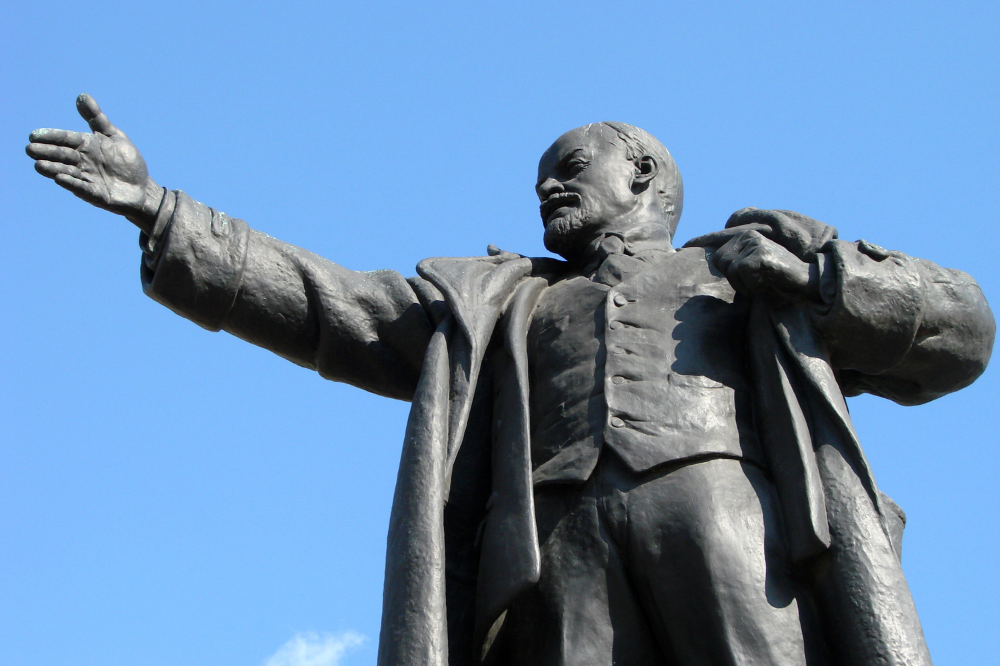
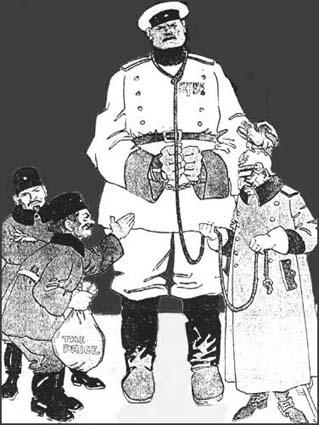
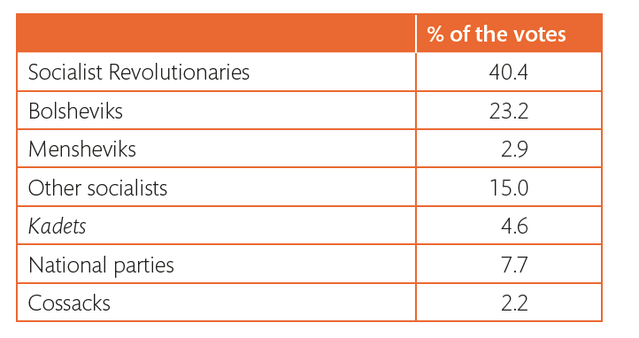
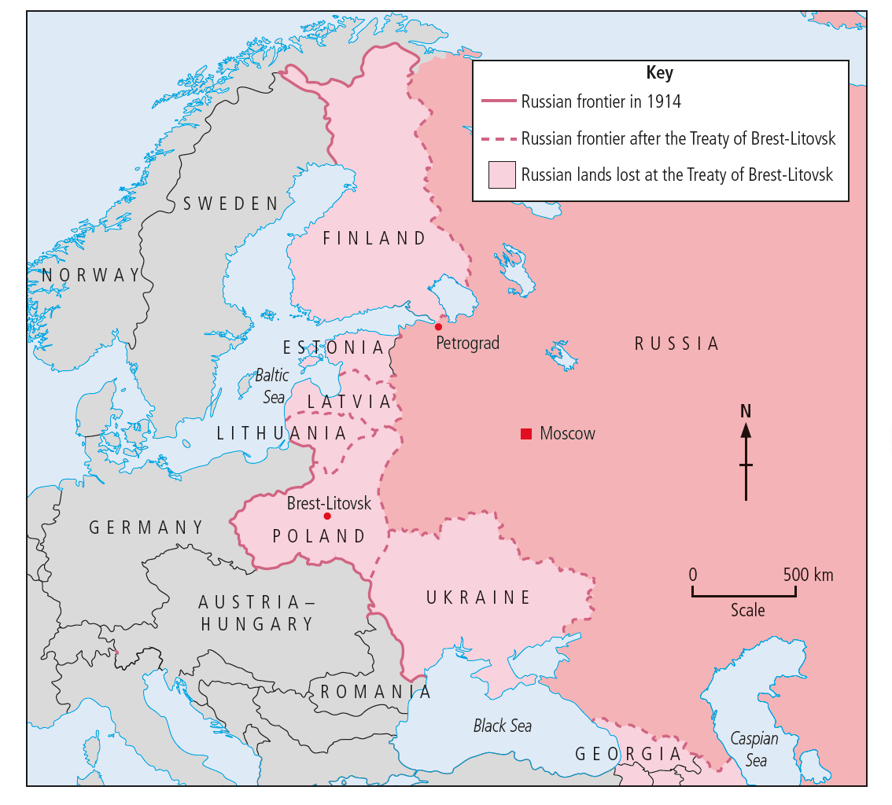
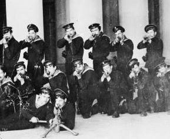
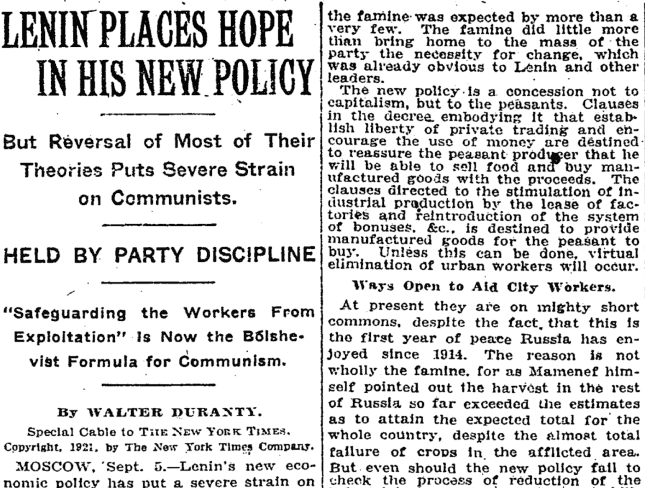
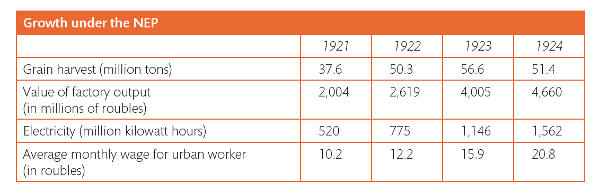
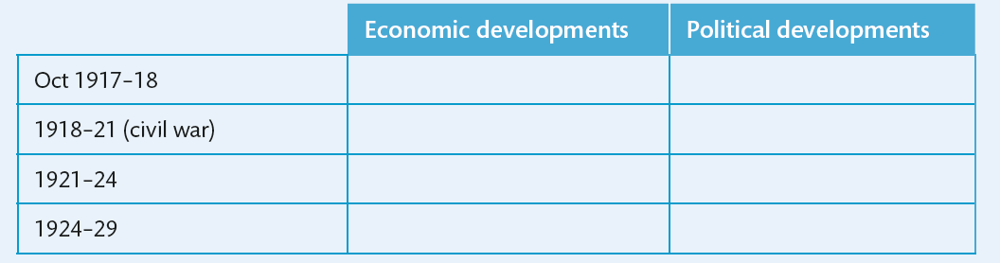
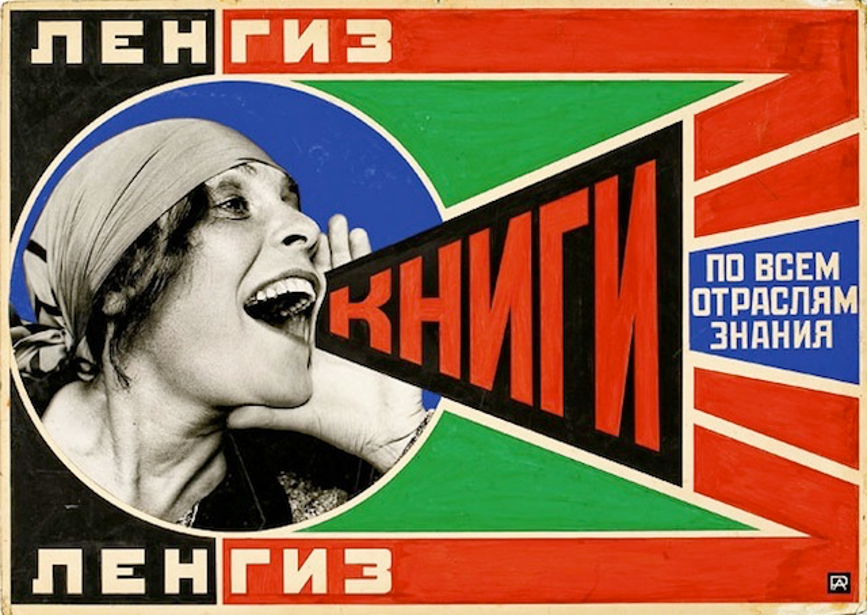

IB Docs (2) Team
IB Docs (2) Team

4. The Bolshevik consolidation of power (1918 - 1924) (ATL)

The years 1917 saw the Bolsheviks going from a fledgling Communist Party with tenuous control over much of Russia and fighting for its very existence, to a secure one-Party state which laid the foundations for Stalin's totalitarian regime in the 1930s.Note that this section can also be used for Section 14, European States in the inter- war years, using Russia as a case study.
Guiding questions:
What initial policies did the Bolsheviks carry out in order to secure power?
Why did a civil war start?
What was the nature of the fighting in the Civil War and why did the Reds win?
What were the results of War Communism?
What was the impact of the New Economic Policy?
What were the social policies of the Bolsheviks?
1. What initial policies did the Bolsheviks carry out in order to secure power?

Cartoon by David Wilson entitled Delivering the Goods, (January, 1918)
Starter
What is the message of this cartoon on the Treaty of Brest Litovsk which the Bolsheviks signed in 1918 with Germany to end the war?
The new government established by the Bolsheviks was the Soviet of People’s Commissars or Sovnarkom. Lenin was chief Minister and all of the first Commissars (or ministers) were Bolsheviks. However, outside of Petrograd, the Bolsheviks were not in a strong position in November 1917. In the countryside they had virtually no influence and they faced strikes and protests from other socialists who objected to being excluded. The actions of the Bolsheivks in the first few months were thus key; these involved the following:
1. Initial decrees
The Bolsheviks passed several decrees that were a clear attempt to win popular support:
Land Decree, Oct 1917: This gave peasants the right to take over land from the gentry and divide it up amongst themselves
Workers’ control decree, November 1917: This put the running of factories in the hands of the workers. factory committees were to control production and finance and to ‘supervise’ management
Rights of the People of Russia decree, November 1917: This gave the right of self-determination to the national miniorities within the Russian Empire.
2. Control of the army
A real danger for the Bolsheviks was the army; the Generals and officer class were unlikely to be sympathetic to the new government. However the High command was already weakened by the politicisation of the army that had taken place after the abdication of the Tsar and the ordinary troops were quickly won over when Lenin moved swiftly to end the fighting. An armistice with signed with the Germans which was followed by the humiliating Treaty of Brest Litovsk which gave Germany one third of Russia’s land (see below). The army disintegrated quickly after this and although the generals themselves were anti-Bolshevik, they could not rely on the loyalty of their troops to fight against the Bolsheviks.
3. Establishment of the Cheka
Lenin was determined to suppress all political opposition and so in December 1917, Sovnarkom established its own secret police, Cheka which had as its aim to destroy ‘counter-revolution and sabotage’. This meant that anyone who might be seen to be opposed to the new government could be arrested: class enemies such as the ‘bourgeoisie’ but also opponents on the left. In addition a decree was passed in October to ban opposition press.
4. Ending the Constituent Assembly
When the Bolsheiviks took power in Ocober 1917, they claimed that they were doing it on behalf of the Congress of Russian Soviets and with the support of other socialist, revolutionary parties such as the Social Revolutionary Party. Lenin’s April Theses had included the demand of ‘All power to the Soviets’ and so it was believed that this is exactly what would happen. However, when the Constituent Assembly met in November 1917 it was clear that Lenin had no intention of sharing power with other Socialists.

The results of the elections to the Constituent Assembly could not be tolerated by Lenin: they had gained only 24% of the vote and had been out voted by nearly two to one by the Social Revolutionaries. Lenin’s reaction was fast and ruthless. After only one day, the Constituent Assembly was shut down at gunpoint by the Red Guards. Lenin argued that the people’s will had already been expressed through the October Revolution and thus the Constituent Assembly was no longer needed as it was ‘an expression of the old regime when the authority belonged to the bourgeoisie’.Thus it was clear from the start that the Bolsheviks intended to rule as a one-party dictatorship.
Other decrees passed in the first few months introduced the following:
- Maximum eight-hour day for workers
- Social insurance to cover old age, unemployment, sickness benefits
- Abolition of titles and class distinctions
- Abolition of justice system
- Equality for women with the right to own property
- Nationalisation of banks and industry
- Democratisation of the army meaning abolition of ranks and election of officers
- Nationalisation of church land
- Separation of Church and state; marriages and divorces now handled by the state
Task One
ATL: Thinking skills
In pairs, review the Decrees above. Who were the Bolsheviks attempting to win over with each of these decrees?

In addition to the above decrees, the Bolsheviks also secured peace with the Germans via the Treaty of Brest Litovsk. This resulted in the loss of the following:- Lithuania, Livonia, Estonia
- The Russian held area of Poland
- Bessarabia (given to Romania)
- Ukraine, Belarus and Georgia where semi-independent government were established.
- In total this resulted in the loss of lost one-sixth of its population, 27% of farm land including the ‘grain basket’ of the Ukraine, 26% of railway lines and 74% of iron ore and coal reserves.
Finally, Lenin also established the Cheka, the secret police.
Task Two
ATL: Thinking skills
Work in pairs for the following questions:
1. Which elements of society would have been (a) pleased (b) unhappy with the Treaty of Brest-Litovsk?
2. Read the Decree below (click on the eye) which established the Cheka. Which classes are targeted in this Decree? What are they accused of and what actions are to be taken against them?
3. Overall who were the 'winners' and who were the 'losers' of Bolshevik policies in the first few months of their rule? In your answer consider workers, peasants, civil servants such as lawyers, army officers, members of other political parties, soldiers, women, factory owners
“In connection with your report today dealing with the struggle against sabotage and counter-revolution, is it now possible to issue the following decree:
Struggle against Counter-Revolution and Sabotage
The bourgeoisie, landholders, and all wealthy classes are making desperate efforts to undermine the revolution which is aiming to safeguard the interests of the toiling and exploited masses. The bourgeoisie is having recourse to the vilest crimes, bribing society’s lowest elements and supplying liquor to these outcasts with the purpose of bringing on pogroms.
The partisans of the bourgeoisie, especially the higher officials, bank clerks, etc., are sabotaging and organising strikes in order to block the government’s efforts to reconstruct the state on a socialist basis. Sabotage has spread even to the food supply organisations and millions of people are threatened with famine. Special measures must be taken to fight counterrevolution and sabotage.
Taking these factors into consideration the Soviet of People’s Commissars decrees the establishment of the Extraordinary Commission to Fight Counter-Revolution. The Commission is to be named the All-Russian Extraordinary Commission and is to be attached to the Soviet of People’s Commissars. [This commission] is to make war on counter-revolution and sabotage…
The duties of the Commission will be:
1. To persecute and break up all acts of counter-revolution and sabotage all over Russia, no matter what their origin.
2. To bring before the Revolutionary Tribunal all counter-revolutionaries and saboteurs and to work out a plan for fighting them.
3. To make preliminary investigation only, enough to break up [counter-revolutionary acts].
The Commission is to watch the press, saboteurs, strikers, and the Right Social-Revolutionaries. Measures [to be taken against these counter-revolutionaries are] confiscation, confinement, deprivation of [food] cards, publication of the names of the enemies of the people, etc.”
2. Why did a civil war start?
For content and ATL on the causes, course and impact of the Russian Civil War please go to this page:
4. What were the results of War Communism?

The Kronstadt Sailors
In order to effectively win the civil war, the economy was geared to what became known as War Communism. This involved nationalising industry. The control that had originally been given to the workers immediately after the revolution was taken away and all industry was put under state control. Industry was geared to war production; discipline was re-introduced along with fines for absenteeism and internal passports. Workers had to work long hours with low wages. Grain requisitioning in the countryside now became official policy and there was a ban on private trading. Rationing was introduced with those who were now termed as 'former people', the middle classes, given the smallest rations. Any resistance to these measures was dealt with brutally by the Cheka, the secret police.
The result was economic chaos and famine. The peasants would not produce grain that would be taken by the requisition squads; this meant drastic shortages and, with the disruption to the economy made worse by the impact of civil war, famine developed leading to millions of deaths. The factories also failed to increase production; indeed with the conditions in towns desperate, many workers fled to the countryside to find food or to escape conscription. This led to a 50% decline in the populations of Moscow and Petrograd. Inflation was rampant and with money worthless, workers were paid in goods rather than money.
Task One
ATL: thinking skills
What can you learn from this source about the impact of War Communism on the upper and middle classes?
From the diary of L. de Robien, a French diplomat living in Russia, Friday 18 February 1918
We are living in a madhouse, and in the last few days there have been an avalanche of decrees. First comes a decree cancelling all banking transactions, then comes another one confiscating houses. I have made no mention of taxes which continue to hit people form whom all source of income has been removed: 500 roubles for a servant, 500 roubles for a bathroom, 600 roubles for a dog and as much for a piano, All inhabitants under the age of 50 are forced to join the 'personal labour corps'. All inhabitants under the age of 50 are forced to join the 'personal labour corps'. Princess Obolensky has bee ordered to go an clear the snow off the Fontanka Quay. Others have to sweep the tramlines at night.
Despite the economic chaos caused by War Communism, many in the party believed that this type of system was true revolutionary Communism. They hated the market system and believed that centralised control and the ending of private ownership was key to establish true socialism. Thus, many were reluctant to abandon it when the civil war ended. However, the need for change was made clear by the widespread anti-Bolshevik uprisings that took place in 1920 – 21. There were hundreds of peasant risings in these years due to the impact of requisitioning. At the same time there was a wave of strike in the cities. However, the most serious threat to the regime came from The Krostadt Rising of 1921.
The Kronstadt Rising
Sailors based on the naval base on the island of Kronstadt near to Petrograd had been loyal to the Bolsheviks both during the October Revolution and during the Civil War. However they now became concerned that the ideals they had hoped would be achieved by a communist revolution were failing to materialise. Conscious of the misery in the countryside and the towns through the letters that they received from families, they rebelled against their superiors on the base and issued a list of demands.
Task Two
ATL: Thinking skills
Read the demands of the Bolsheviks (click on the eye below)
- What can you learn from these demands about the state of Russia by 1921?
- In pairs discuss Lenin's options once he received these demands
Resolution of political demands passed by the crew of the Petropavlovsk on 8th February, 1921.
(1) Immediate new elections to the Soviets. The present Soviets no longer express the wishes of the workers and the peasants. The new elections should be by secret ballot, and should be preceded by free electoral propaganda.
(2) Freedom of speech and of the press for workers and peasants, for the Anarchists, and the Left Socialist parties.
(3) The right of assembly, and freedom for trade union and peasant organizations.
(4) The organization, at the latest on 10th March 1921, of a Conference of non-Party workers, soldiers and sailors of Petrograd, Kronstadt and the Petrograd District.
(5) The liberation of all political prisoners of the Socialist parties, and for all imprisoned workers and peasants, soldiers and sailors belonging to workers and peasant organizations.
(6) The election of a commission to look into the dossiers of all those detained in prisons and concentration camps.
(7) The abolition of all political sections in the armed forces. No political party should have privileges for the propagation of its ideas, or receive State subsidies to this end. In the place of the political sections, various cultural groups should be set up, deriving resources from the State.
(8) The immediate abolition of the militia detachments set up between towns and countryside.
(9) The equalization of rations for all workers, except those engaged in dangerous or unhealthy jobs.
(10) The abolition of Party combat detachments in all military groups. The abolition of Party guards in factories and enterprises. If guards are required, they should be nominated, taking into account the views of the workers.
(11) The granting of the peasants of freedom of action on their own soil, and of the right to own cattle, provided they look after them themselves and do not employ hired labour.
(12) We request that all military units and officer trainee groups associate themselves with this resolution.
Lenin acted swiftly to end the rebellion. Although the first attack on the Kronstadt base failed, eventually 50,000 Red Army troops crossed the frozen ice towards the base. The sailors resisted fiercely; however, in the end the base was recaptured. Any ringleaders who had survived were shot and any who had escaped were hunted down by the Cheka and killed or sent to a concentration camp.
Nevertheless, Lenin realised that the Kronstadt rising needed to be taken seriously. At the Tenth Conference of the Communist Party, in March 1921, he announced that the Kronstadt rising had ‘lit up reality like a lightening flash’. He now moved to tackle the economic chaos by introducing the New Economic Policy (NEP). This was not, however, to be accompanied by any lessening of Bolshevik control over society such as had been demanded by the Kronstadt sailors; indeed it would become even tighter.
5. What was the impact of the New Economic Policy?

Starter: What is meant by the second of the headlines here?
At the 1921 Party Conference, Lenin told the delegates:
We must try to satisfy the demands of the peasants who are dissatisfied, discontented, and cannot be otherwise. In essence the small farmer can be satisfied with two things. First of all, there must be a certain amount of freedom for the small proprietor; and, secondly, commodities and products must be provided.’
This change in thinking led to the following measures which became known as the New Economic Policy or NEP:
- There was to be an end to grain requisitioning. Instead peasants were to pay a tax in kind (i.e. grain) to the government; this was much less than the amounts taken by requisitioning. They would then be able to sell the remainder, their surplus crops, for profit on the open market.
- Small businessmen were to be allowed to own and run medium sized firms and factories and to make a profit. This included businesses that sold goods such as shoes, nails and clothes. It was essential to have such goods available to purchase – otherwise the peasants would still have been unwilling to sell their goods for money.
- Private traders were to be allowed to buy and sell goods for profit on the open market
- Rationing was abolished. A new revalued currency was to be reinstated for use in trading
State industries such as coal, steel and coal, which Lenin called ‘the commanding heights of the economy’, were to remain in government hands. Nevertheless NEP was nevertheless a significant move away from state control of the economy. Russia now had a ‘mixed’ economy where elements of capitalism existed alongside socialism. Many party members considered NEP to be a betrayal of the principles of the October Revolution. However the Kronstadt Rebellion persuaded them that the party needed unity and they needed NEP as a ‘temporary measure’ in order to maintain power. As Bukharin argued, ‘we are making economic concessions to avoid political concessions’.
Task One
ATL: Thinking skills
Read the following source which was written by an American journalist, Walter Duranty who was in Moscow during the NEP period. This comes from his book. 'I write as a I please', published in 1935
- What does Duranty highlight as the benefits of NEP?
- What are the downsides of NEP that he alludes to?
- With reference to origin, purpose and content, what are the value and limitations of this source for a historian studying the impact of NEP?
To the Communists and to the small group of proletarian leaders who had benefited by the Military Communist period NEP was doubtless repugnant, but to the mass of workers it brought jobs that would henceforth be paid in money instead of valueless paper or mouldy rations. To the traders NEP meant opportunity of better days...Ill informed foreigners like myself naturally saw the superficial phases of NEP, its reckless gambling, its corruption and license; which not all the truth but real enough..In a single year the supply of food and goods jumped from starvation point to something nearly adequate and prices fell accordingly. This was the rich silt in NEP's flood, whereas the gambling and debauchery were only froth and scum.
What were the results of NEP?

Starter:
What does this table indicate about the impact of the NEP?
By 1922, NEP had already had a positive impact on the economy. Food was once more available in the markets and cities once more became centres of trading. Both agricultural and industrial production increased. Between 1920 and 1923, factory output rose by almost 200 per cent.
One group of people who emerged as a result of the new economic policy were the ‘Nepmen’ who were private traders who bought up goods from farmers and small businesses and sold them in the markets in the cities; by 1923 Nepmen handled as much as three-quarters of the retail trade and had become wealthy as a result. The peasants also did well as a result of NEP due to the extra money that they could now make through selling goods and crafts
There were problems as well as successes. Industry did not keep up with the growth in agriculture and while the Nepmen benefitted, industrial workers faced high unemployment. By 1923 what Trotsky called ‘the scissors crisis’ had emerged caused by the quantity of food pushing prices down while industrial goods remained expensive due to their scarcity.
The worry in this situation was that the peasants would now stop selling their produce as they would be unable to afford industrial goods. However the government took action to bring industrial prices down and started to take peasant tax in cash rather than goods to encourage them to sell their food for money.
Political repression 1921 – 1924
The easing of centralised control on the economy during NEP did not mean an easing of political repression:
- Censorship became more systematic
- Attacks on other political parties increased
- Show trials (see next chapter on Stalin) appeared for the first time in which Social Revolutionaries accused old colleagues of terrible crimes against the state
- Peasants who had participated in revolts against the state were brutally dealt with and whole villages destroyed
- Attacks on the Church were stepped up
- The Cheka was renamed the GPU in 1922 and grew in importance during NEP. Citizens were still subjected to arbitrary arrest and execution
In addition, the process of centralisation within the Bolshevik Party did not end following the civil war. At the Tenth Party Congress of 1921, the ‘Ban on Factions’ was passed. This was a response to pressure groups within the party. One of these called ‘The Workers’ Opposition’ had called for more worker involvement in the running of factories and a greater role for independent trade unions. Another group called ‘Democratic Centralists’ also called for greater involvement in policy making for ordinary party members. To Lenin, such groups were a distraction given the enormity of the problems facing Russia in 1921 and he called for unity. The resulting ‘Ban on Factions’ meant that party policy could not be challenged; in fact the death penalty could be used against those breaking this rule.
Task Two
ATL: Self-management skills
Copy out and complete the following grid to summarise the key political and economic developments during the Bolshevik period of power.

What was Lenin's approach to relations with European countries?
Starter: What does this source indicate about the likely relationship between Russia and European countries?
'We have always and repeatedly pointed out to the workers that the underlying chief task and basic condition of our victory is the propagation of revolution at least to several of the more advanced countries'.
Lenin, February 1921
Task One
ATL: Thinking skills
Read the following quote from Churchill made in 1924. What does this tell you about the attitude of the West towards the new Communist state?
From the earliest moment of its birth the Russian Bolshevik Government has declared its intention of using all the power of the Russian Empire to promote world revolution. Their agents have penetrated into every country. Everywhere they have endeavoured to bring into being the 'germ cells' from which the cause of Communism should grow'
As you have read already, Lenin's main aim after winning the revolution was to secure an end to the fighting in the war; hence the Treaty of Brest-Litovsk. All foreign debts were also cancelled. Lenin's intention to spread world revolution was then put on hold as his priority after 1918 was to secure victory against the Whites in the civil war who were fighting with the aid of foreign powers; this indicates the degree of hostility by other countries towards the threat of communism. The fact that the Bolsheviks established the Comintern which had as its aim to co-ordinate and promote Communist parties in other countries only increased the fear and hostility felt by other countries.
However, Lenin's attempt to defeat the Poles in 1921 and thus use this 'as a red bridge into Europe' to spread revolution failed when the Bolsheviks were defeated outside of Warsaw. Indeed the Poles had also refused to embrace communism, and attempts at communist revolution in Germany (the Spartacist uprising) and in Hungary, also failed. Thus the following years also saw a change in policy. Lenin was very much a pragmatist; Russia was vulnerable to attack and was also in a dire economic situation. However, Beryl Williams writes that 'Peaceful coexistence [for Lenin] was a means to an end..the goal remained a European, indeed a world Communist state.' (Lenin, 2000)
Task Two
ATL: Research and thinking skills
1. Make notes on each of the following explaining what it was, what it reveals about the aims of Russian foreign policy and the impact it had on Russia's position in Europe
- The war with Poland, 1920
- The Treaty of Rapallo, 1922
- The Second International Congress, 1920
- Anglo-Soviet trade Agreement, 1921
2. What was the Zinoviev letter and what was its impact?
What were the social policies of the Bolsheviks?
Note that social policies are not part of the requirements for this section of Paper 3. However, if you plan to use Russia as a case study for Section 14 of Paper 3 on Inter-war domestic developments in European states, you will also need to look at social developments
Restructuring society

The Bolsheviks wanted to change society. One of their promises had been that they would firstly change society by ending all privilege and setting up a state of equals. After the revolution, they attempted to achieve this aim by attacking the rich and the middle classes; as the lives of the poor failed to improve despite this utopian vision – nevertheless, the Bolshevik regime still aimed to get approval of the workers through their attacks on the wealthy. Members of the propertied class or bourgeoisie lost all titles and property and were now known as ‘former people’; everyone was now called comrade to imply equality. Acts of intimidation and violence including looting of property were encouraged.
One of the humiliations ‘former people’ were forced to suffer was sharing their living space. The wealthy could end up giving their best rooms over to their former servants who were delighted to have their revenge. As Figes writes,
‘Here was a whole world of hidden revolutions in domestic life where the servants and the masters literally changed places. It was a microcosm of the social transformation in the country at large.’ (A People’s Tragedy, Bodley Head 1997) The ‘former people’ were also put to work in such tasks as clearing the streets of snow, the main aim being to humiliate them. Trotsky summed this up in a speech. ‘For centuries our fathers and grandfathers have been cleaning up the dirt and the filth of the ruling classes, but now we will make them clean up out dirt. We must make life so uncomfortable for them that they will lose the desire to remain bourgeois’.
Changing society, however, involved more than destroying the bourgeoisie. It also meant attempting to change attitudes and practices connected with roles of women and the family, eradicating the position of religion in society, expanding educational opportunities for workers using education to indoctrinate the young
Women and the family
The Bolsheviks wanted to change the position of women in society; this meant freeing them from the drudgery of housework and the constraints of marriage which was regarded as a ‘bourgeois’ intuition. One Soviet poster proclaimed. ‘Women of Russia, Throw Away Your Pots and Pans!’ Laws were passed immediately to make divorce easier and in 1920, abortion was made available on demand. It was hoped that this would liberate women from the tyranny of their husbands. Crèches were encouraged in the workplace and there were also some attempts to remould family life by encouraging communal spaces in housing blocks in the hope that this would break down the traditional family unit.
There was some success with these measures. Within urban populations, there was a rise in divorce and the numbers of abortions; indeed by the mid 1920s Russia’s divorce rate was the highest in Europe. However positive change on the lives of women as a result of these developments was limited; those who divorced but had children, for example, received little in financial support from fathers. Meanwhile the government found that the idea of providing enough crèches or public canteens to free women from childcare and housework was too costly. After the civil war, there was also a reversal of some of the measures, particularly with regard to abortion which once again became restricted by law.
Within the work place, the numbers of women employed actually declined during the Bolshevik years. During the First World War, the percentage of women in the urban workforce doubled but at the end of the Civil War, many of their jobs were given back to the returning men. During the NEP many were forced from skilled to unskilled work, mainly in the textile and domestic service areas. Many drifted into prostitution and crime.
Within politics, women also saw little improvement. Despite proclaiming equality for women, only 12.8 % of the party membership was women by 1928 (as opposed to 10 percent in 1917). Indeed change was limited by the traditional Russian attitudes of men about the role of women which excluded them from party activities.
Task One
ATL: Research skills
Alexandra Kollontai was a leading feminist of the Bolshevik era who argued for greater emancipation for women in all areas of life.
Research her beliefs regarding marriage, the family, work and children along with her role and influence in the Bolshevik revolution and government.
Religion
The Russian Orthodox Church was fully entrenched in people’s lives and an important part of Russian national identity. However, Karl Marx had claimed that religion was ‘the opium of the masses’, in other words that it had been designed by rulers to keep the ordinary people quiet and in their place. (and certainly it had been used by the Tsars as an instrument of social control). As Marxists, Lenin and the leading Bolsheviks were atheists and they were determined that people should believe only in Communism. Thus, immediately after the revolution a series of measures were introduce to severely limit the power and influence of religion:
- The Decree on the separation of Church and State, January 1918, declared that the Church could not own property, Church schools were to be taken over and church buildings destroyed or used for other purposes
- Priests and clerics were declared ‘servants of the bourgeoisie’ which meant that they could not vote or receive ration cards; many priests were arrested by the Cheka
- A massive propaganda campaign set out to prove to the Russian people that God did not exist; various methods were used to prove that Christian miracles were in fact myths. This went to the extent of taking peasants for rides in aeroplanes so that they could see for themselves that there were no angels in the sky. The Society of the Godless (also known as League of Militant Atheists) was established with the specific aim of turning people against religion and promoting atheism.
- Religious holidays were replaced with secular holidays such as May Day and Revolution Day
- raditional religious ceremonies were ‘Bolshevised’ so that, for example, couples took a marriage vow in front of a portrait of Lenin instead of the altar and children were said to be ‘Octobered’ instead of baptised
After 1921, the Church was attacked more directly. The shooting of priests began and local soviets were told to remove valuables from churches to pay for famine relief. There was bitter resistance to this resulting in violent clashes between Bolshevik soldiers and ordinary peasants.. Although many in the Politburo felt that the anti-Church campaign had gone too far and should be ended. Lenin adamantly refused claiming that. ‘I have come to the unequivocal conclusion that we must now wage the most decisive and merciless war against the Black Hundred Clergy’. (quoted in lowe, pg 180). It is estimated that throughout 1922 – 23 as many as 700 clergy were killed in clashes with soldiers and that 8000 people were executed.
Nevertheless, although the influence of the orthodox Church as an organisation was broken, surveys of the peasantry in the mid-1920s indicate that over half of all peasantry were still Christian and that they still continued with religious practices, keeping their priests by paying them with voluntary donations.
Education
Education was seen as vital for changing society and efforts were made to transform education for children as well as bring it to the workers. Institutes or workers faculties were set up to help workers prepare themselves for higher education while soldiers in the Red Army who were illiterate now had reading and writing classes as part of their training.
The aim of education for children was to combine education with Bolshevik propaganda. In 1919, the Party Programme defined schools as ‘an instrument for the Communist transformation of society’. However, the man in charge of education, Lunacharsky was also interested in progressive educational ideas. He wanted the children of workers to have a wide general education but also to ‘learn by doing’. Thus he planned for mixed classes of vocational and academic education which was to be followed by all classes of children thus allowing working class people to have a knowledge of culture as well as of industrial skills. Progressive ideas were also introduced into teaching methods; he believed it was important to focus on the development of a child’s personality. Thus there was to be relaxed discipline and project work instead of examinations.
The drive for literacy had notable successes: between 1920 and 1926 approximately five million people in European Russia took education courses. By 1926, 51 percent of the population were considered literate compare to 43 percent in 1917. Within schools however, few teachers understood the progressive methods proposed by Lunacharsky and eventually the more liberal methods were abandoned. Lack of resources also prevented the dream of providing free universal education to all children up to the age of 17. In fact, during the NEP, many children left schools.
How did the Bolsheviks change culture?
The era 1917 to 1929 saw a period of experimentation and new freedoms in culture in which ‘Avant-garde’ artists such as Marc Chagall and Wassily Kadinsky rejected the bourgeois was of life and bourgeois art and produced more abstract work. This was encouraged by Lenin, at least at the beginning.
One group of artists aimed to create a socialist style of art known as ‘constructivism’. This tried to bring contemporary art into everyday life by designing clothes and furniture for use in the factory; the idea was that art was to help alter everything – the way people dressed to how they lived and how they travelled.
Task One
ATL: Research and presentation skills
The following areas all saw experimentation during the 1920s in Russia:
Art
Architecture
Cinema
Literature
Music
Divide the class into groups; each group should take one of these areas of cultural change and prepare a presentation for the rest of the class on:
• the key areas of change/experimentation
• reasons for the experimentation (influence of the war or the revolution?)
• the leading artists at this time
• if/how it was used as propaganda to support the Bolshevik cause
• Any lasting/significant pieces of work
• The Bolshevik reaction to the experimentation
 Twitter
Twitter
 Facebook
Facebook
 LinkedIn
LinkedIn